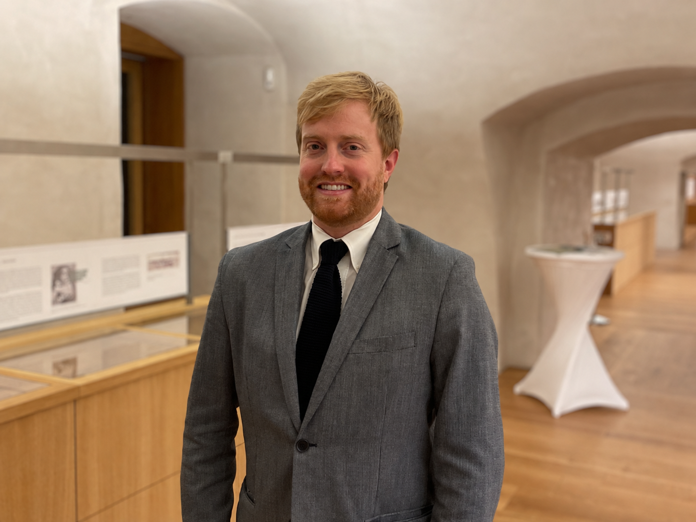
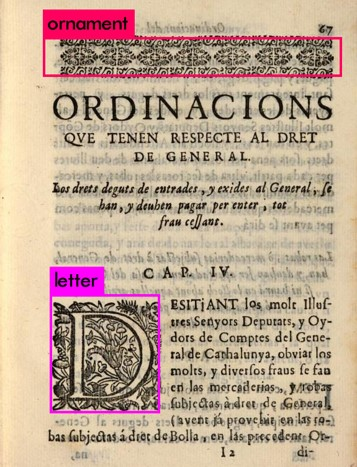

Modern History · Digital History
Drew B.
Thomas
I study the history of communication in early modern Europe—especially print, images, and the people who made and moved them during the Protestant Reformation.
Assistant Professor of Modern History
University of Salzburg · Emphasis on Digital History

Profile
Book history at computational scale.
I am a historian of early modern material culture and communication, with a particular focus on the printing industry of the Holy Roman Empire during the Protestant Reformation and German Renaissance.
My work combines the close study of books and woodcuts with computational methods. I use convolutional neural networks, graph databases, vector databases, and large bibliographical datasets to investigate how printers designed, manufactured, copied, and circulated texts and images.
Current research: Visualizing Faith: Print, Piety & Propaganda examines how religious groups used visual communication in propaganda and devotional literature during periods of conflict.

Selected work
Publications
- 2026
“Transferring AI-Based Iconclass Classification Across Image Traditions: A RAG Pipeline for the Wenzelsbibel.” With Julia Hintersteiner. Histories 6, no. 1: 17.
- 2026
“Automating Iconclass: LLMs and RAG for Large-Scale Classification of Religious Woodcuts.” Digital Culture & Education 16, no. 3: 161–182.
- 2026
“Michael Lotter und der Buchdruck in Magdeburg zur Zeit der Reformation.” In Großstadt und Reformation, edited by Hartmut Kühne and Christoph Volkmar. Magdeburger Schriften. Halle: Mitteldeutscher Verlag.
- 2025
“Provenance and Deception: Tracking Counterfeit Luther Pamphlets in Wittenberg.” Reformation 30, no. 1: 1–40.
- 2022
The Industry of Evangelism: Printing for the Reformation in Martin Luther’s Wittenberg. Leiden: Brill.
- 2022
“A Crowded Field in Luther’s Wittenberg: Collaboration and Sub-Contracting in the Reformation Book Trade.” In The Book World of Early Modern Europe, vol. 2, 36–50.
- 2022
“Selling Luther: Printing Counterfeits in Reformation Augsburg.” In Communities of Print, 17–38.
- 2021
“The Lotter Printing Dynasty: Michael Lotter and Reformation Printing in Magdeburg.” In Print Culture at the Crossroads, 245–268.
- 2019
“Circumventing Censorship: The Rise & Fall of Reformation Print Centres.” In Negotiating Conflict and Controversy in the Early Modern Book World, 13–37.
- 2019
“Cashing in on Counterfeits: Fraud in the Reformation Print Industry.” In Buying and Selling: The Business of Books in Early Modern Europe, 276–300.
- 2017
“Reconstructing Broadsheet Production in Wittenberg.” In Broadsheets: Single-sheet Publishing in the First Age of Print, 114–137.
For a fuller record of books, articles, chapters, reviews, and exhibitions, see the curriculum vitae.